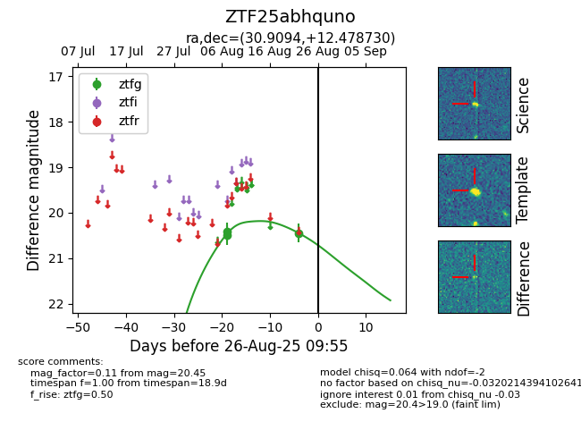

Target ZTF25abhquno at 2025-08-26 09:55, see:
FINK: fink-portal.org/ZTF25abhquno
Lasair: lasair-ztf.lsst.ac.uk/objects/ZTF25abhquno
ALeRCE: alerce.online/object/ZTF25abhquno
alt names
ZTF25abhquno (ztf,fink)
coordinates:
equatorial (ra, dec) = (30.9094,+12.47873)
galactic (l, b) = (149.1026,-46.69153)
photometry
last ztfg=20.45
3 ztfg detections
